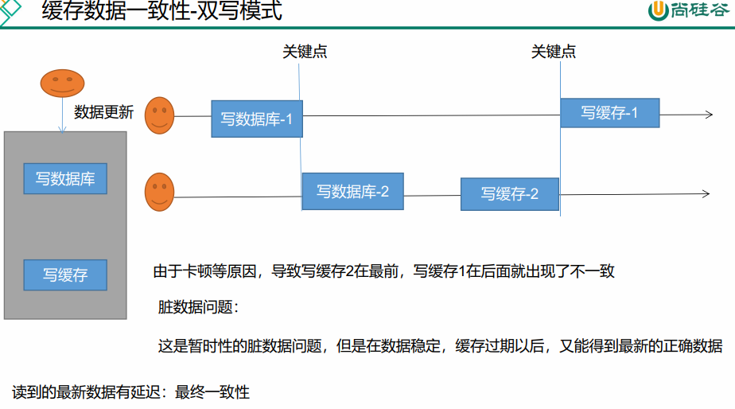

# 官方推荐
注意: 下面这种设计模式并不推荐用来实现 redis 分布式锁。应该参考 the Redlock algorithm 的实现，因为这个方法只是复杂一点，但是却能保证更好的使用效果。
** 文档：**https://github.com/redisson/redisson/wiki/Table-of-Content
# Pom 依赖
未集成 springboot 的依赖：org.redisson » redisson
<!-- https://mvnrepository.com/artifact/org.redisson/redisson --> | |
<dependency> | |
<groupId>org.redisson</groupId> | |
<artifactId>redisson</artifactId> | |
<version>3.12.0</version> | |
</dependency> |
集成 springboot 配置好的：**** redisson-spring-boot-starter
# 配置
使用程序化配置
@Configuration | |
public class MyRedissonConfig { | |
/** | |
* 所有对 Redisson 的使用都是通过 RedissionClient 对象 | |
* @return | |
*/ | |
@Bean(destroyMethod = "shutdown") | |
public RedissonClient redissonClient(){ | |
Config config = new Config(); | |
config.useSingleServer().setAddress("redis://192.168.61.132:6379"); // 创建单个连接 | |
return Redisson.create(config); | |
} | |
} |
基于 Redis 的 Redisson 分布式可重入锁 RLock Java 对象实现了 java.util.concurrent.locks.Lock 接口。同时还提供了异步（Async）、反射式（Reactive）和 RxJava2 标准的接口。
https://github.com/redisson/redisson/wiki/8.- 分布式锁和同步器
# 代码测试
# 可重入锁（Reentrant Lock）
@ResponseBody | |
@GetMapping("/hello") | |
public String hello(){ | |
// 获取一把锁，只要锁的名字一样就是同一把锁 在 redis 中添加 my-lock | |
RLock lock = redissonClient.getLock("my-lock"); | |
// 枷锁，因为它继承了 juc 中的 lock 所以用法等同于 juc 的锁 | |
lock.lock(); | |
try { | |
System.out.println("枷锁成功，执行业务" + Thread.currentThread().getId()); | |
Thread.sleep(5000); | |
} catch (InterruptedException e) { | |
e.printStackTrace(); | |
} finally { | |
// 解锁 | |
System.out.println("释放锁" + Thread.currentThread().getId()); | |
lock.unlock(); | |
} | |
return "hello"; | |
} |
假设出现宕机断电，未能释放锁，redisson 会不会出现死锁呢？
答案当然是不会。
默认加的锁都是 30s,
1、锁的自动续期，如果业务超长，运行期间自动锁上新的 30s。不用担心业务时间长，锁自动过期被删掉
2、加锁的业务只要运行完成，就不会给当前锁续期，即使不手动解锁，锁默认会在 30s 内自动过期，不会产生死锁问题
官网：大家都知道，如果负责储存这个分布式锁的 Redisson 节点宕机以后，而且这个锁正好处于锁住的状态时，这个锁会出现锁死的状态。为了避免这种情况的发生，Redisson 内部提供了一个监控锁的看门狗，它的作用是在 Redisson 实例被关闭前，不断的延长锁的有效期。默认情况下，看门狗的检查锁的超时时间是 30 秒钟，也可以通过修改 Config.lockWatchdogTimeout 来另行指定。
另外 Redisson 还通过加锁的方法提供了 leaseTime 的参数来指定加锁的时间。超过这个时间后锁便自动解开了。
如果使用 lock.lock(10, TimeUnit.SECONDS); 设置了过期时间，则看门狗不会为我们自动续时间，所以我们如果要用，设置过期时间就应该大于业务执行的时间。
问题：在锁时间到了以后，不会自动续期
- 如果我们传递了锁的超时时间，就发送给 redis 执行脚本，进行占锁，默认超时就是 我们制定的时间
- 如果我们指定锁的超时时间，就使用 lockWatchdogTimeout = 30 * 1000 【看门狗默认时间】
- 只要占锁成功，就会启动一个定时任务【重新给锁设置过期时间，新的过期时间就是看门狗的默认时间】, 每隔 10 秒都会自动的再次续期，续成 30 秒
- internalLockLeaseTime 【看门狗时间】 / 3， 10s，-》多久进行续期
最佳实战：
lock.lock(10, TimeUnit.SECONDS); 可以省掉整个续期操作。手动解锁
# 公平锁（Fair Lock）
# 联锁（MultiLock）
# 红锁（RedLock）
** 参照官方文档：**https://github.com/redisson/redisson/wiki/8.- 分布式锁和同步器
# 读写锁（ReadWriteLock）
拿同一把锁，当写锁在进行更新的时候，读锁则不能获取到数据，必须等待写锁释放后才行。
代码
/** | |
* 保证一定能读到最新数据，修改期间，写锁是一个排它锁（互斥锁、独享锁），读锁是一个共享锁 | |
* 写锁没释放读锁必须等待 | |
* 读 + 读 ：相当于无锁，并发读，只会在 Redis 中记录好，所有当前的读锁。他们都会同时加锁成功 | |
* 写 + 读 ：必须等待写锁释放 | |
* 写 + 写 ：阻塞方式 | |
* 读 + 写 ：有读锁。写也需要等待 | |
* 只要有读或者写的存都必须等待 | |
* @return | |
*/ | |
@GetMapping(value = "/write") | |
@ResponseBody | |
public String writeValue() { | |
String s = ""; | |
RReadWriteLock readWriteLock = redisson.getReadWriteLock("rw-lock"); | |
RLock rLock = readWriteLock.writeLock(); | |
try { | |
//1、改数据加写锁，读数据加读锁 | |
rLock.lock(); | |
s = UUID.randomUUID().toString(); | |
ValueOperations<String, String> ops = stringRedisTemplate.opsForValue(); | |
ops.set("writeValue",s); | |
TimeUnit.SECONDS.sleep(10); | |
} catch (InterruptedException e) { | |
e.printStackTrace(); | |
} finally { | |
rLock.unlock(); | |
} | |
return s; | |
} | |
@GetMapping(value = "/read") | |
@ResponseBody | |
public String readValue() { | |
String s = ""; | |
RReadWriteLock readWriteLock = redisson.getReadWriteLock("rw-lock"); | |
// 加读锁 | |
RLock rLock = readWriteLock.readLock(); | |
try { | |
rLock.lock(); | |
ValueOperations<String, String> ops = stringRedisTemplate.opsForValue(); | |
s = ops.get("writeValue"); | |
try { TimeUnit.SECONDS.sleep(10); } catch (InterruptedException e) { e.printStackTrace(); } | |
} catch (Exception e) { | |
e.printStackTrace(); | |
} finally { | |
rLock.unlock(); | |
} | |
return s; | |
} |
# 信号量测试
使用 RSemaphore semaphore = redisson.getSemaphore("semaphore");
park.acquire(); // 获取一个信号、获取一个值，占一个车位 |
在 redis 中创建 park 给定数值为 3，调用 park 一次相当于 3-1，减到 0 则不能继续 park，可以是请求 go 来释放也就是加 1 每次。
代码
/** | |
* 车库停车 | |
* 3 车位 | |
* 信号量也可以做分布式限流 | |
*/ | |
@GetMapping(value = "/park") | |
@ResponseBody | |
public String park() throws InterruptedException { | |
RSemaphore park = redisson.getSemaphore("park"); | |
park.acquire(); // 获取一个信号、获取一个值，占一个车位 | |
boolean flag = park.tryAcquire(); // 不会进行阻塞等待，直接获取是否可以的结果 | |
if (flag) { | |
// 执行业务 | |
} else { | |
return "error"; | |
} | |
return "ok=>" + flag; | |
} | |
@GetMapping(value = "/go") | |
@ResponseBody | |
public String go() { | |
RSemaphore park = redisson.getSemaphore("park"); | |
park.release(); // 释放一个车位 | |
return "ok"; | |
} |
可以做限流
# 闭锁
等待规定的线程都执行完了再做处理
代码
/** | |
* 放假、锁门 | |
* 1 班没人了 | |
* 5 个班，全部走完，我们才可以锁大门 | |
* 分布式闭锁 | |
*/ | |
@GetMapping(value = "/lockDoor") | |
@ResponseBody | |
public String lockDoor() throws InterruptedException { | |
RCountDownLatch door = redisson.getCountDownLatch("door"); | |
door.trySetCount(5); | |
door.await(); // 等待闭锁完成 | |
return "放假了..."; | |
} | |
@GetMapping(value = "/gogogo/{id}") | |
@ResponseBody | |
public String gogogo(@PathVariable("id") Long id) { | |
RCountDownLatch door = redisson.getCountDownLatch("door"); | |
door.countDown(); // 计数 - 1 | |
return id + "班的人都走了..."; | |
} |
# 锁的粒度
// 锁的名字：锁的粒度，越细越快
// 锁的力度：锁分的越细越快，例如商品，如果对所有商品使用同一把锁比如product-lock，则查看不同商品的时候需要等待锁的释放，应该针对同一个商品
// 例如对某一个id为1的商品进行枷锁，为id2的商品枷锁 --> product-1-lock product-2-lock
修改之前使用 redis 手写的分布式锁换成 redisson
public Map<String, List<Catelog2Vo>> getCatalogJsonDBWithRedissonLock() { | |
// 锁的名字：锁的粒度，越细越快 | |
// 锁的力度：锁分的越细越快，例如商品，如果对所有商品使用同一把锁比如 product-lock，则查看不同商品的时候需要等待锁的释放，应该针对同一个商品 | |
// 例如对某一个 id 为 1 的商品进行枷锁，为 id2 的商品枷锁 --> product-1-lock product-2-lock | |
RLock lock = redisson.getLock("catalogJson-lock"); | |
lock.lock(); | |
// 枷锁成功 执行业务 | |
Map<String, List<Catelog2Vo>> dataFromDb = null; | |
try { | |
dataFromDb = getDataFromDb(); | |
} catch (Exception e) { | |
e.printStackTrace(); | |
} finally { | |
lock.unlock(); | |
} | |
return dataFromDb; | |
} |
# 缓存数据一致性
- 双写模式
- 失效模式
